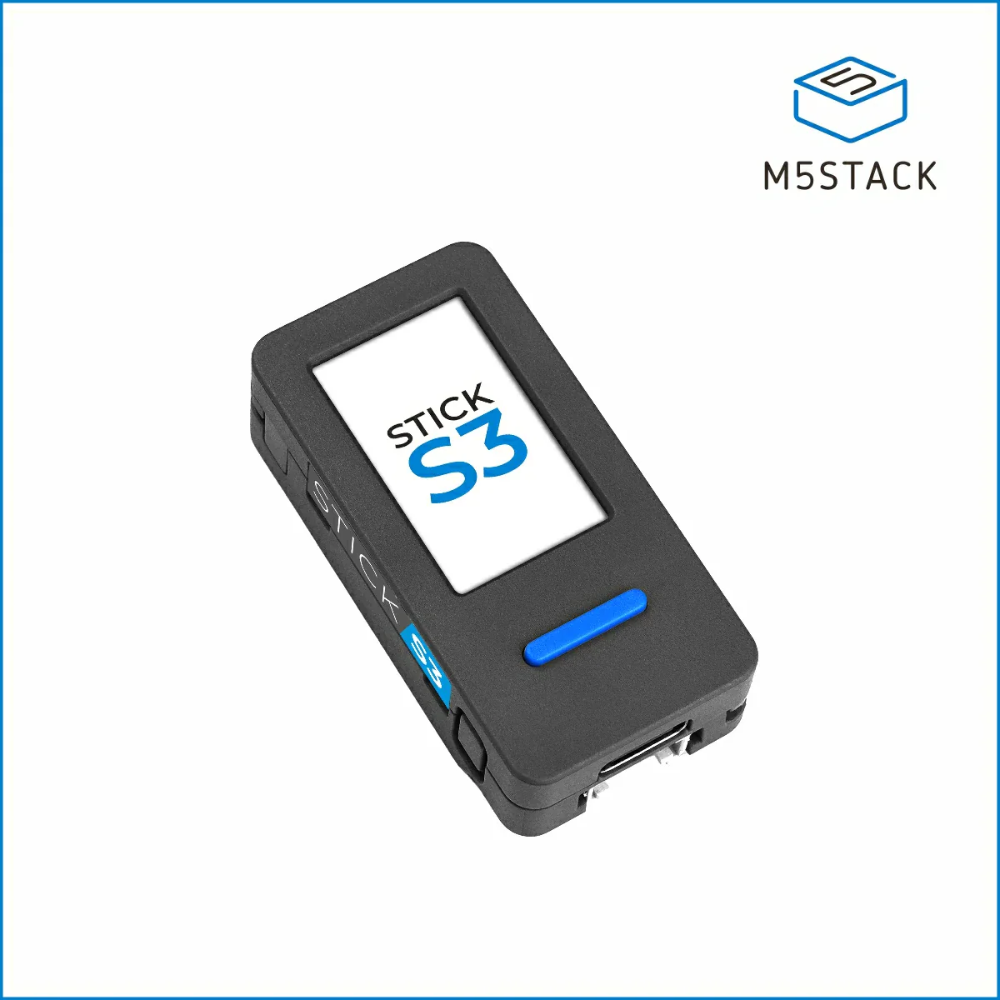

Flash your M5StickS3, connect it to WiFi, and add the overlay to OBS — all from this page.
Safari, Firefox, and mobile browsers do not support the Web Serial API required to flash and configure the device. If you're on the wrong browser, open this page in Chrome or Edge and try again.

| Button | Action |
|---|---|
| KEY1 (blue button) — short press | Wake the screen |
| KEY1 (blue button) — hold | Zero the step count |
| KEY2 (large grey, right) — press | Show WiFi reset warning on screen |
| KEY2 (large grey, right) — hold | Clear saved WiFi credentials and restart |